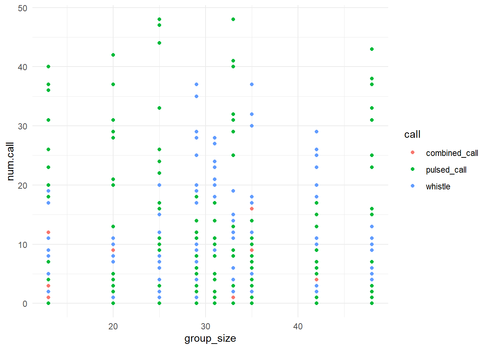
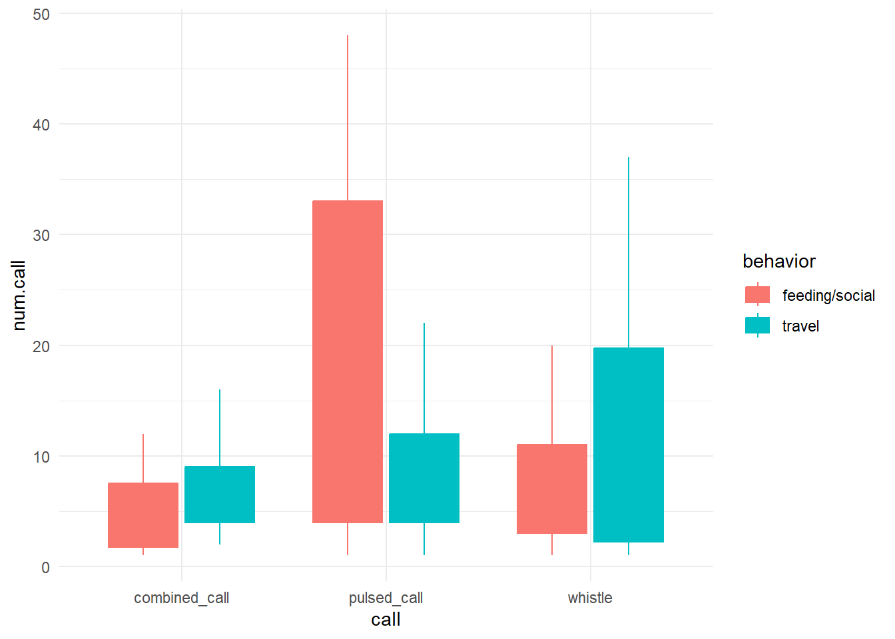
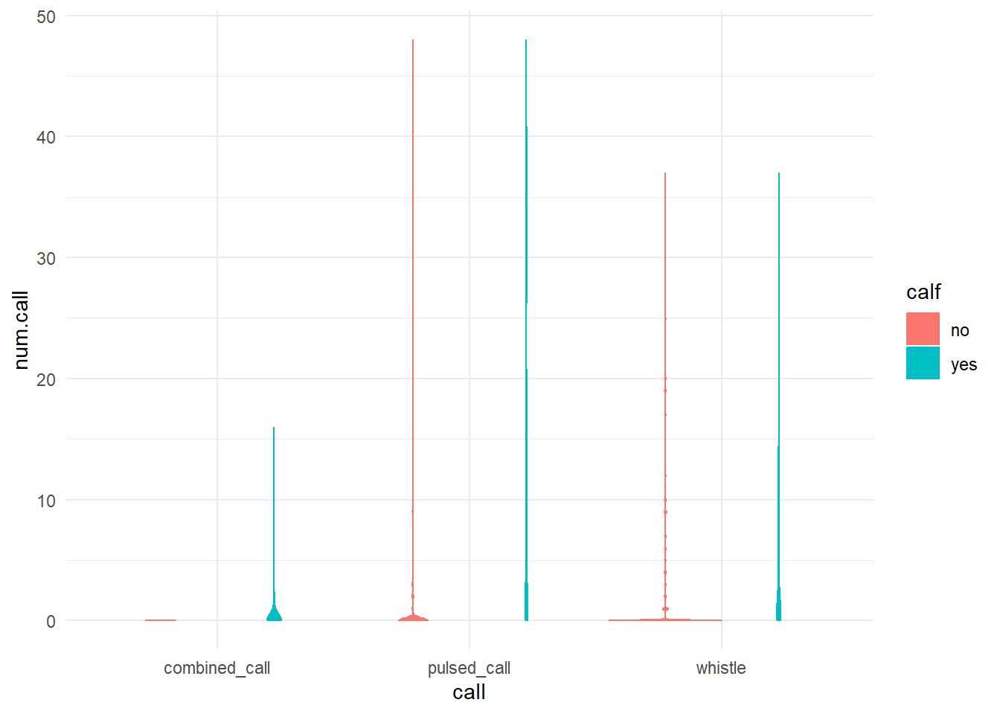
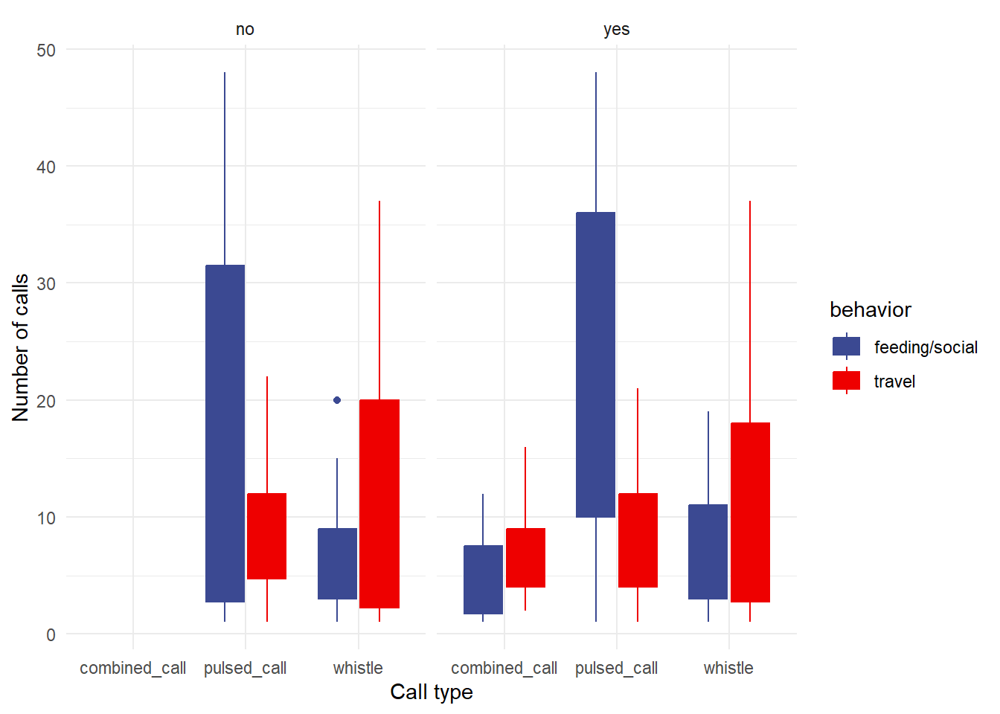
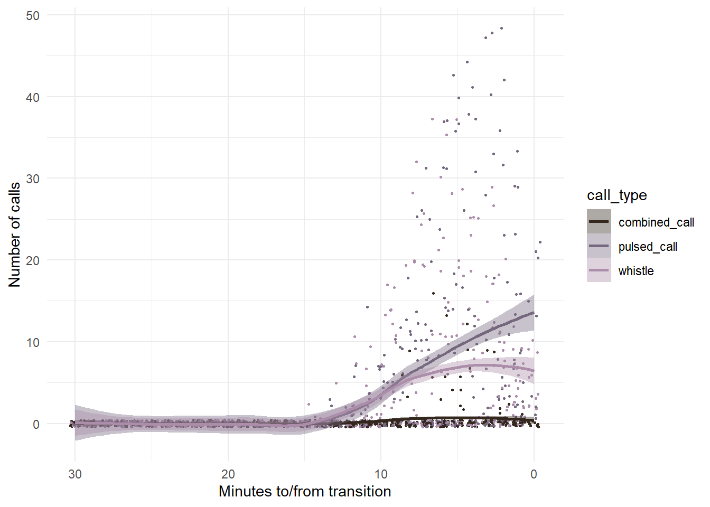

library(tidyverse)
library(PNWColors)
library(ggsci)1. Analyse calling behavior in Cook Inlet beluga whales
Data visualization with R and ggplot2
Install new packages
In R, you only need to install packages into your library once…(until you update R, then packages may need to be re-installed). To install a new package that you have not yet installed, use the install.packages("package_name") function. You can run this line of code in your console (not in the script) to install any packages you don’t have yet.
For example, you may need to run install.packages("ggsci") to install the ggsci package. That is required for this script.
Load libraries
Load your data
Important
Pay attention to your file paths! You may need to change the file path below depending on where your data file is located relative to your working directory. Here, we assume you are working from a .Rmd script that is saved in your code folder, and the data file is located in a folder called data that is one level up from code.
data <- read_csv("../data/CIB_calling_behavior.csv")Let’s do some initial data exploration
Tip
As a reminder, you can insert a new code chunk with the keyboard shortcut Ctrl + Alt + I (Windows) or Cmd + Option + I (Mac).
Distributions of variables
When visualizing distributions with geom_histogram(), ggplot expects you to pass a value to the x aesthetic.
If we want to visualize group sizes, we pass group_size to the x variable.
ggplot(data = data, aes(x=group_size)) +
geom_histogram(binwidth=10) +
xlab("group size")
Tip
What happens when you change the binwidth? Try changing it to 5 or 20 and see how the histogram changes.
Now it’s your turn! Create histograms like the one above for the following variables:
combined_callwhistlepulsed_call
Important
- What are the proper x axis labels for these variables?
- What do you notice about the distributions? Are they normally distributed? Skewed?
Now let’s compare with our behavior parameters
- Pivot the dataframe so that we can compare all call types at once
data.long <- data %>%
pivot_longer(cols = c(combined_call,whistle,pulsed_call),names_to = "call", values_to = "num.call")- Does the number of calls in each call type change with group size?
ggplot(data = data.long, aes(x = group_size, y = num.call, color = call, fill = call)) +
geom_point() +
theme_minimal()
- Is that difference statistically significant?
lm.w <- lm(whistle ~ group_size, data = data)
summary(lm.w)- Does the number of calls in each call type change with group behavior?
data.long %>%
filter(num.call > 0) %>%
ggplot(aes(x = call, y = num.call, color = behavior, fill = behavior)) +
geom_boxplot() +
theme_minimal()
- Is that difference statistically significant?
lm.w.behavior <- aov(whistle ~ behavior, data = data)
summary(lm.w.behavior)lm.pc.behavior <- lm(pulsed_call ~ behavior, data = data)
summary(lm.pc.behavior)- Does the number of calls in each call type change with calf presence?
ggplot(data = data.long, aes(x = call, y = num.call, color = calf, fill = calf)) +
geom_violin() +
theme_minimal()
- Is that difference statistically significant?
lm.cc.calf <- lm(combined_call ~ calf, data = data)
summary(lm.cc.calf)Put it all together in one pretty visualization
data.long %>%
filter(num.call > 0) %>%
ggplot(aes(x = call, y = num.call, color = behavior, fill = behavior)) +
geom_boxplot() +
theme_minimal() +
facet_wrap(~calf) +
scale_fill_aaas() +
scale_color_aaas() +
xlab("Call type") +
ylab("Number of calls")
Look at calling behavior approaching behavioral transition
data_update_long <- data %>%
pivot_longer(pulsed_call:combined_call, names_to = "call_type", values_to = "nCalls")ggplot(data_update_long, aes(x = timediff_transition, y = nCalls, fill = call_type)) +
geom_bar(stat = "identity") +
facet_wrap(~encounter) +
theme_minimal()
lm_callsOverTime <- lm(nCalls ~ abs(timediff_transition), data = data_update_long)
summary(lm_callsOverTime)ggplot(data_update_long, aes(x = abs(timediff_transition), y = nCalls,
color = call_type, fill = call_type)) +
geom_jitter(size = 0.5) +
theme_minimal() +
geom_smooth() +
scale_x_reverse() +
scale_fill_manual(values = pnw_palette("Shuksan")) +
scale_color_manual(values = pnw_palette("Shuksan")) +
xlab("Minutes to/from transition") +
ylab("Number of calls")
Knitting a lab report
When you’re ready to knit your .Rmd or .qmd file into a final report, click the “Knit” or “Render” button at the top of the script editor in RStudio. This will generate an HTML (or PDF/Word if you choose) document that includes both your code and the output (figures, tables, etc.) from running that code.
You can control what is printed by each chunk across the script by including a setup chunk at the top of your document. A setup chunk is a special code chunk that sets global options for all code chunks in the document. A setup chunk could look like this:
# This is the setup chunk
knitr::opts_chunk$set(
echo = TRUE, # Display code chunks
eval = TRUE, # Evaluate code chunks
warning = FALSE, # Hide warnings
message = FALSE, # Hide messages
comment = "") # Prevents appending '##' to beginning of lines in code output)) In the setup chunk above, we set options to display code (echo = TRUE), evaluate code (eval = TRUE), and hide warnings and messages. Make sure you name the setup chunk by including setup after the {r, in the chunk header (e.g., {r, setup, include=FALSE}). By typing include=FALSE in the setup chunk header, we prevent the setup chunk itself from being displayed in the final document.
Coincidentally, this is how we set options for individual chunks by adding parameters to the chunk header (e.g., {r, echo=FALSE} to hide code for that specific chunk). You can also click the settings wheel icon in the top right corner of any code chunk in RStudio to set chunk options via a graphical user interface (GUI).

Experiment with including various chunk options and compare your knitted / rendered documents to see the differences.